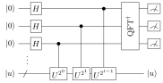

13 Fourier transform, phase estimation and Shor’s algorithm
The most celebrated quantum algorithm factors integers in polynomial time, breaking RSA. Its engine is the quantum Fourier transform (QFT), which turns phases into measurable bit strings, packaged in the phase estimation algorithm. Factoring reduces classically to finding the period of modular exponentiation, and phase estimation finds periods. This chapter builds the three layers: QFT, phase estimation, order finding and Shor’s algorithm.
13.1 The quantum Fourier transform
On an \(n\)-qubit register with \(N = 2^n\) basis states \(\ket j\), \(j = 0, \dots, N-1\), \[\mathrm{QFT}\,\ket j = \frac{1}{\sqrt N}\sum_{k=0}^{N-1}e^{2\pi i jk/N}\ket k .\]
It is the discrete Fourier transform applied to the amplitudes, and it is unitary. For \(n = 1\) it is the Hadamard gate. Writing \(j = j_1j_2\dots j_n\) in binary and \(0.j_\ell j_{\ell+1}\dots j_n = \sum_m j_m 2^{\ell - 1 - m}\) for binary fractions, the QFT factorises: \[\mathrm{QFT}\ket{j_1\dots j_n} = \frac{1}{2^{n/2}}\bigl(\ket 0 + e^{2\pi i\,0.j_n}\ket 1\bigr)\otimes\bigl(\ket 0 + e^{2\pi i\,0.j_{n-1}j_n}\ket 1\bigr)\otimes\dots\otimes\bigl(\ket 0 + e^{2\pi i\,0.j_1j_2\dots j_n}\ket 1\bigr).\]
Each output qubit is a product state whose phase depends on some of the input bits. This gives the circuit: on qubit \(j_1\) apply \(H\) (producing the phase \(e^{2\pi i\,0.j_1}\)), then controlled phase gates \(R_k = \mathrm{diag}(1, e^{2\pi i/2^k})\) controlled by \(j_2, \dots, j_n\) (adding \(0.0j_2\), \(0.00j_3\), …); repeat on \(j_2, j_3, \dots\); finally reverse the qubit order with swaps. The total is \(n(n+1)/2\) gates, i.e. \(O(n^2)\), against \(O(n2^n)\) for the classical FFT on \(2^n\) numbers.
The QFT does not make classical Fourier analysis exponentially faster: the transformed amplitudes cannot be read out (a measurement returns one \(k\) at random). It is useful only when the output is concentrated on a few values carrying the information we need — exactly the situation in phase estimation.
13.2 Phase estimation
Problem. A unitary \(\hat U\) has an eigenvector \(\ket u\) with eigenvalue \(e^{2\pi i\varphi}\), \(\varphi \in [0, 1)\) unknown. Given the ability to prepare \(\ket u\) and to apply controlled-\(\hat U^{2^j}\) gates, estimate \(\varphi\) to \(t\) bits.

Figure: phase estimation with a \(t\)-qubit control register (three wires shown) and a target register prepared in the eigenvector \(\ket u\).
Analysis. After the Hadamards, the control register is \(2^{-t/2}\sum_{k}\ket k\). A controlled-\(\hat U^{2^j}\) acting on \(\ket u\) kicks back the phase \(e^{2\pi i\varphi 2^j}\) onto control qubit \(j\) (phase kickback, as in Chapter 12), so the state becomes \[\frac{1}{2^{t/2}}\sum_{k=0}^{2^t - 1}e^{2\pi i\varphi k}\ket k\otimes\ket u .\] This is exactly \(\mathrm{QFT}\ket{2^t\varphi}\). If \(\varphi = 0.\varphi_1\dots\varphi_t\) has an exact \(t\)-bit expansion, the inverse QFT returns \(\ket{\varphi_1\dots\varphi_t}\) with certainty. Otherwise the measured value is the best \(t\)-bit approximation with probability at least \(4/\pi^2 \approx 0.405\); with \[t = n + \Bigl\lceil\log_2\Bigl(2 + \frac{1}{2\varepsilon}\Bigr)\Bigr\rceil\] control qubits one obtains \(\varphi\) to \(n\) bits with probability at least \(1 - \varepsilon\).
If the target is a superposition \(\sum_u c_u\ket u\) of eigenvectors, the algorithm returns the phase \(\varphi_u\) with probability \(|c_u|^2\) — a key point for order finding.
13.3 Order finding
For integers \(x < N\) with \(\gcd(x, N) = 1\), the order of \(x\) modulo \(N\) is the smallest \(r > 0\) such that \(x^r \equiv 1 \pmod N\).
No efficient classical algorithm is known. Quantumly, consider the unitary \(\hat U_x\ket y = \ket{xy \bmod N}\) on \(L = \lceil\log_2 N\rceil\) qubits (a permutation of basis states with \(y < N\)). Its eigenvectors include \[\ket{u_s} = \frac{1}{\sqrt r}\sum_{k=0}^{r-1}e^{-2\pi i sk/r}\ket{x^k \bmod N}, \qquad \hat U_x\ket{u_s} = e^{2\pi i s/r}\ket{u_s}, \quad s = 0, \dots, r-1 .\] Phase estimation on \(\ket{u_s}\) would yield \(s/r\). We cannot prepare a specific \(\ket{u_s}\) without knowing \(r\) — but we do not need to, since \[\frac{1}{\sqrt r}\sum_{s=0}^{r-1}\ket{u_s} = \ket 1 .\] Running phase estimation on \(\ket 1\) returns an estimate of \(s/r\) for a uniformly random \(s\). The continued fractions algorithm extracts the fraction \(s/r\) from a \(2L+1\)-bit approximation; if \(\gcd(s, r) = 1\) (which happens with probability \(\Omega(1/\log\log r)\), so a few repetitions suffice) the denominator is \(r\).
The controlled-\(\hat U_x^{2^j}\) gates are implemented by modular exponentiation: compute \(x^{2^j} \bmod N\) by repeated squaring, then multiply. Its cost, \(O(L^3)\) gates with schoolbook multiplication, dominates the algorithm.
13.4 Shor’s algorithm
Let \(N\) be odd and not a prime power, and \(x\) chosen uniformly among the integers in \([2, N-1]\) coprime to \(N\). With probability at least \(\tfrac12\), the order \(r\) of \(x\) is even and \(x^{r/2} \not\equiv -1 \pmod N\). In that case \[\gcd(x^{r/2} - 1, N) \quad\text{and}\quad \gcd(x^{r/2} + 1, N)\] are non-trivial factors of \(N\).
Reason. \(x^r - 1 = (x^{r/2} - 1)(x^{r/2} + 1) \equiv 0 \pmod N\), so \(N\) divides the product. It does not divide \(x^{r/2} - 1\) (by minimality of \(r\)) nor, by assumption, \(x^{r/2} + 1\); hence it shares a non-trivial factor with each. \(\square\)
Shor’s algorithm for an \(L\)-bit \(N\):
- If \(N\) is even, return \(2\). If \(N = a^b\), return \(a\) (classically efficient check).
- Pick a random \(x \in [2, N-1]\). If \(\gcd(x, N) > 1\), return it (Euclid’s algorithm).
- Find the order \(r\) of \(x\) with the quantum order-finding subroutine.
- If \(r\) is odd or \(x^{r/2} \equiv -1 \pmod N\), go back to 2. Otherwise return \(\gcd(x^{r/2} \pm 1, N)\).
The quantum part costs \(O(L^3)\) operations (less with fast multiplication); the best known classical algorithm, the number field sieve, runs in time \(\exp\bigl(O(L^{1/3}(\log L)^{2/3})\bigr)\) — a super-polynomial speed-up. RSA-2048 would require millions of noisy physical qubits with error correction; current devices are far from that, which is why post-quantum cryptography and QKD (Chapter 10) are being deployed now.
Take \(x = 7\): the powers modulo \(15\) are \(7, 4, 13, 1\), so \(r = 4\). Phase estimation returns \(s/4 \in \{0, \tfrac14, \tfrac12, \tfrac34\}\) with equal probability; the outcomes \(\tfrac14\) and \(\tfrac34\) give \(r = 4\) directly. Then \(x^{r/2} = 49 \equiv 4 \pmod{15}\), \(\gcd(3, 15) = 3\) and \(\gcd(5, 15) = 5\). This instance was run on an NMR quantum computer (2001) and on a scalable trapped-ion processor (2016).
13.5 Exercises
Write the QFT on two qubits as a \(4\times 4\) matrix and check that it maps \(\ket{00}\) to the uniform superposition.
Solution. With \(\omega = e^{2\pi i/4} = i\): \(\mathrm{QFT}_4 = \tfrac12\begin{pmatrix}1 & 1 & 1 & 1\\ 1 & i & -1 & -i\\ 1 & -1 & 1 & -1\\ 1 & -i & -1 & i\end{pmatrix}\). The first column gives \(\mathrm{QFT}\ket{00} = \tfrac12(\ket{00} + \ket{01} + \ket{10} + \ket{11})\).
Factor \(N = 21\) with \(x = 2\). What could go wrong with \(x = 20\)?
Solution. Powers of \(2\) mod \(21\): \(2, 4, 8, 16, 11, 1\), so \(r = 6\). \(2^3 = 8 \not\equiv -1\); \(\gcd(7, 21) = 7\) and \(\gcd(9, 21) = 3\). With \(x = 20 \equiv -1\): \(r = 2\) and \(x^{r/2} = 20 \equiv -1 \pmod{21}\), the bad case — the algorithm must restart with another \(x\).
13.6 Sources
Prof. Vallone, Quantum Information and Computing, lectures 18 (quantum Fourier transform, Shor’s algorithm) and 19 (phase estimation). Nielsen & Chuang, Chapter 5 and Appendix 4. Benenti, Casati & Strini, Vol. I, Chapter 3. Further reading suggested in the lectures: Phys. Rev. Lett. 85, 3049 (2000); T. Monz et al., Realization of a scalable Shor algorithm, Science 351, 1068 (2016). Original reference: P. Shor, Polynomial-time algorithms for prime factorization and discrete logarithms on a quantum computer, SIAM J. Comput. 26, 1484 (1997).